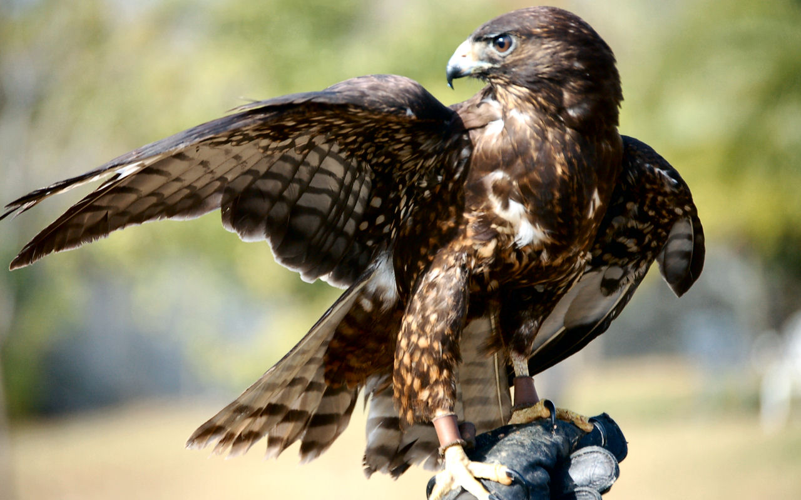
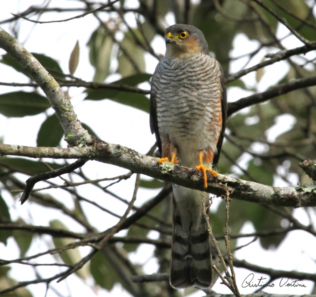
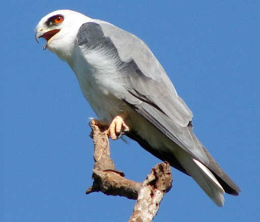

Tipos de espécies de gaviões
- Gavião-carijó (Rupornis magnirostris) – Comum na América do Sul.
- Gavião-real (Harpia harpyja) – Uma das maiores aves de rapina do mundo. 
- Gavião-de-cauda-curta (Buteo brachyurus) – Conhecido pela cauda curta e voo ágil. 
- Gavião-miúdo (Accipiter striatus) – Pequeno, ágil, encontrado nas Américas. 
- Gavião-peneira (Elanus leucurus) – Conhecido por pairar no ar durante a caça.


Curiosidades sobre Gaviões
Visão Afiada: Gaviões têm uma visão até oito vezes mais aguçada que a dos humanos.
Diversidade: Existem mais de 250 espécies de gaviões no mundo, variando em tamanho e comportamento.
Habilidades de Caça: O gavião-peregrino é o animal mais rápido do mundo, alcançando 300 km/h em mergulhos.
A Evolução dos Gaviões
Os gaviões pertencem à família Accipitridae e evoluíram há cerca de 65 milhões de anos, logo após a extinção dos dinossauros. Seus ancestrais eram aves de rapina menores, adaptadas a diferentes ambientes e tipos de presas. Com o tempo, os gaviões se diversificaram em mais de 250 espécies, desenvolvendo características específicas como visão aguçada e habilidades de caça especializadas.